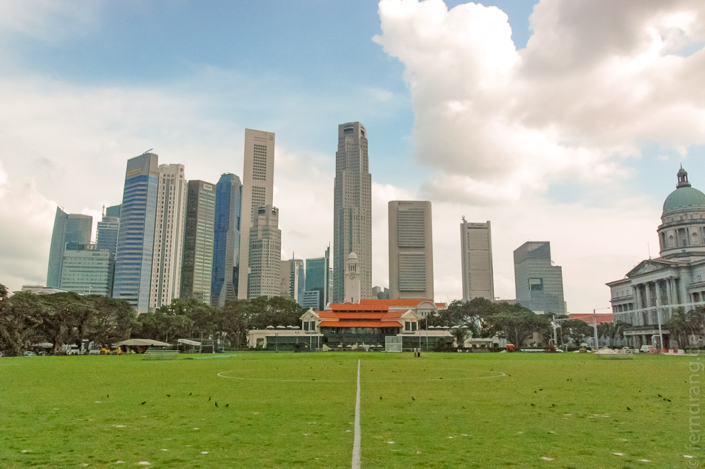
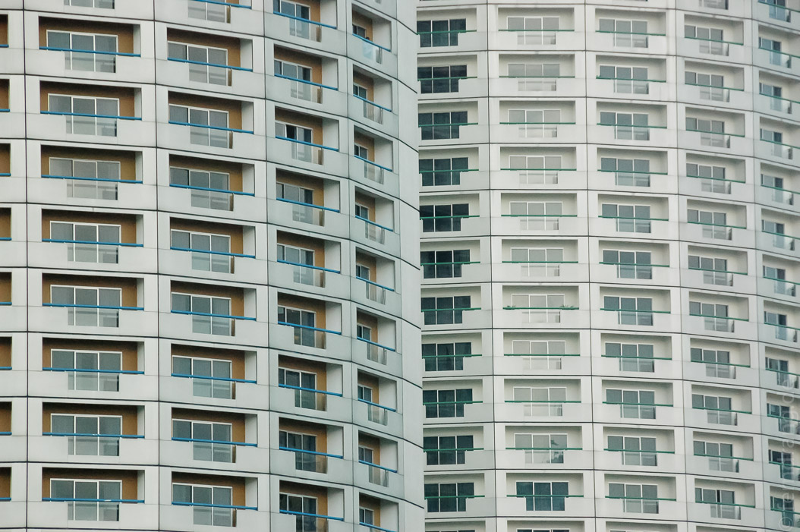
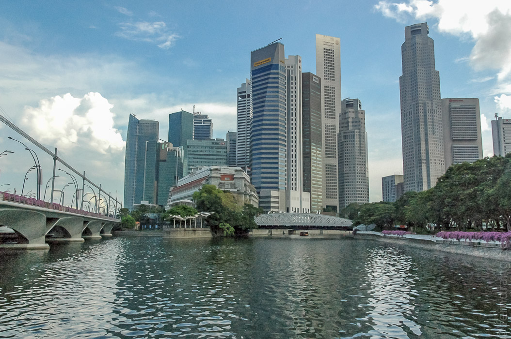
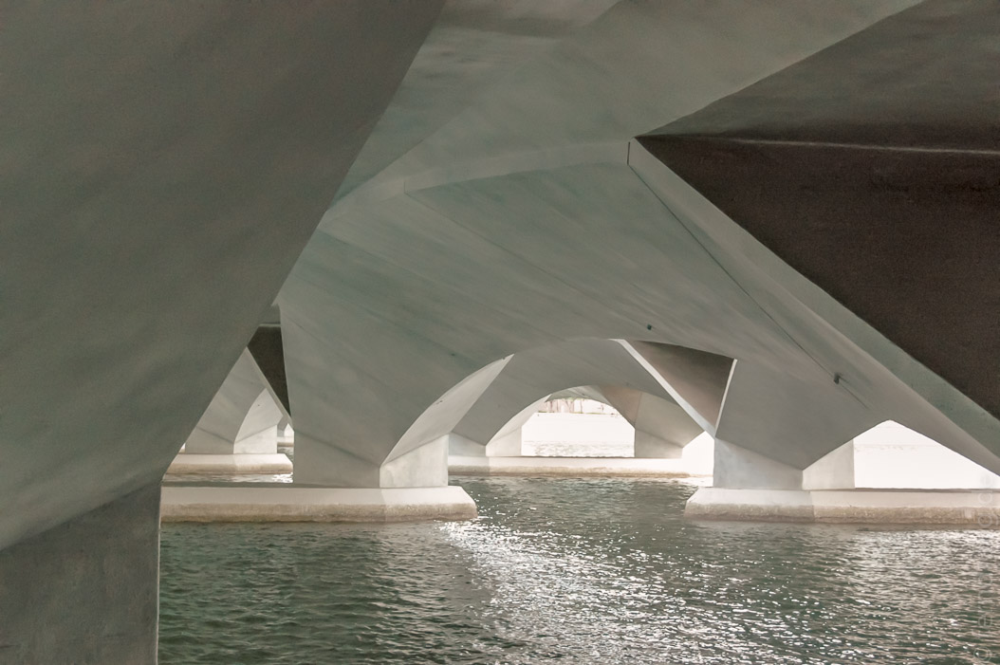
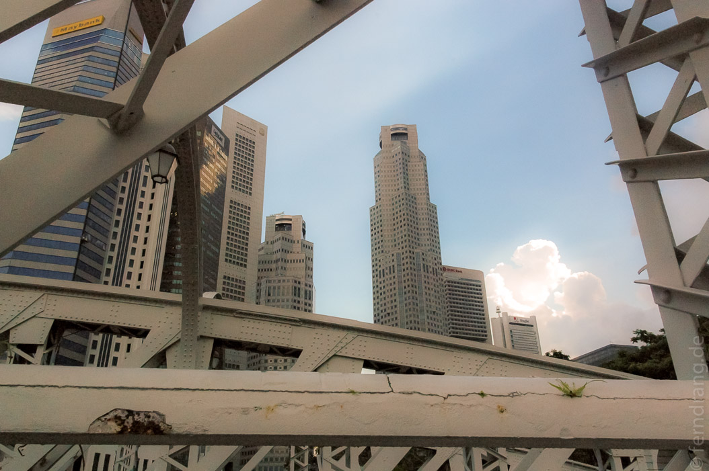
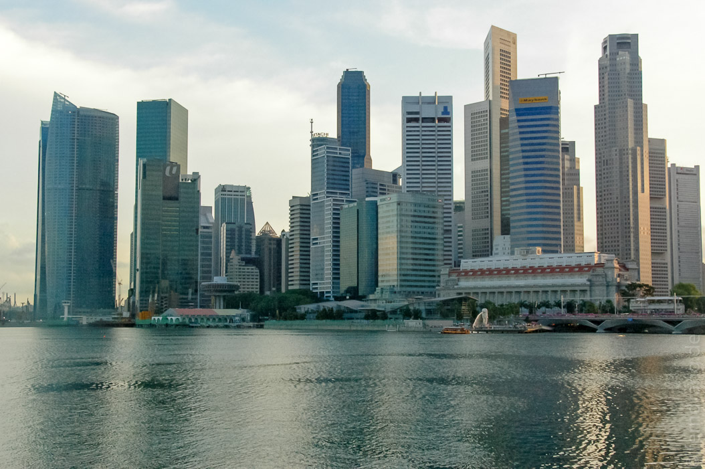
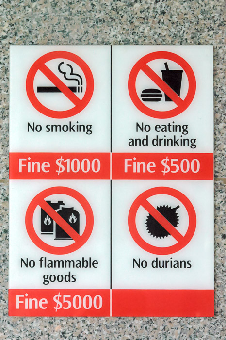
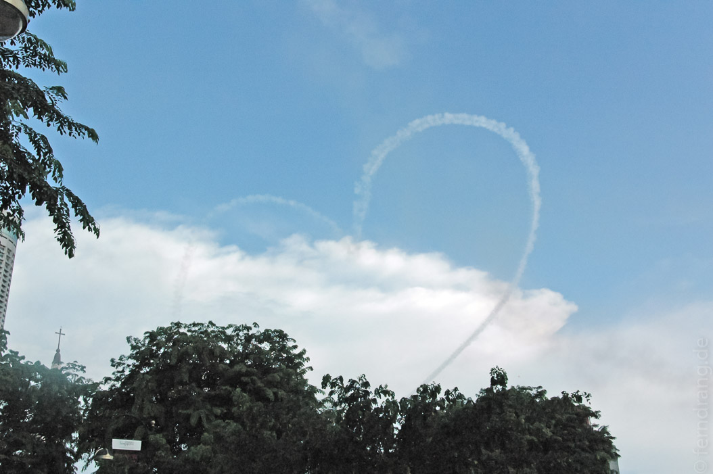
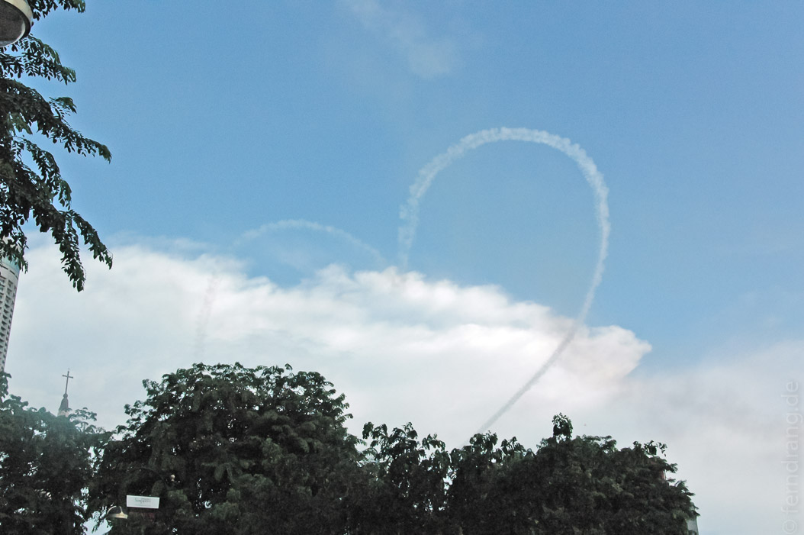

Leider sind wir erst zwei Stunden nach Abflug unseres Anschlussfluges dort eingetroffen. Natürlich hat Singapore Airlines uns beteuert, dass wir auf den nächstmöglichen Flug umgebucht werden würden. Das Versprechen wurde auch eingelöst. Nur ist Manado leider kein so attraktives Ziel, dass man dort täglich oder gar mehrmals an einem Tag hinfliegen könnte. Der neue Boarding-Pass für den nächsten Flug wurde uns mit den Worten überreicht, "your flight is at 9:25h ... the day after tomorrow".
Wie es der Zufall wollte, blieb unser Reise-Roulette also auf Singapur stehen. Von der Fluggesellschaft haben wir ein Gutscheinformular für zwei Übernachtungen, Mahlzeiten und Transfer bekommen. Mit einer Airporttaxe sind wir in unser neues Zuhause, das Peninsula Excelsior gefahren. Der Name verspricht mehr als er halten kann. Auch wenn die Inneneinrichtung etwas weniger geschmacklos war als erwartet, so war doch der Charme eines chinesischen Hotels noch deutlich spürbar. Besonders die unfassbare Ineffizienz des Personals erinnerte uns an Hong-Kong oder Shanghai.
Zwei Vorteile hat das Hotel aber: Die Lage ist im Zentrum aller Sehenswürdigkeiten und die Außenseite so hoch und hässlich, dass sie schon von Weitem als Landmarke dient. Einmal in Singapur angekommen, wollten wir natürlich das Beste daraus machen. Da wir uns an unseren ebenso kurzen Singapur-Aufenthalt 2002 kaum noch erinnerten, gab es viel zu entdecken. Den Rest des Tages haben wir uns in der neu angelegten Hafen-Region herumgetrieben und die Konzerthalle "Esplanade" bewundert, die wie zwei liegende Durians aussieht. Der Bezug auf die lokale Frucht wird von der Informationstafel sogar explizit erwähnt, was umso mehr verwundert, da diese arme, stinkende Frucht als einziges Lebensmittel sowohl in der U-Bahn als auch in unserem Hotel verboten ist.
Den Wecker haben wir natürlich auf 2:45 Uhr nachts gestellt. Denn das Deutschlandspiel wurde auf allen möglichen Sendern übertragen. Wenn wir uns hätten aufraffen können, hätten wir das Spiel sogar Open-Air gucken können, denn ein Restaurant um die Ecke zeigt alle Spiele auf einer Leinwand und hat deswegen die ganze Nacht geöffnet.







 
